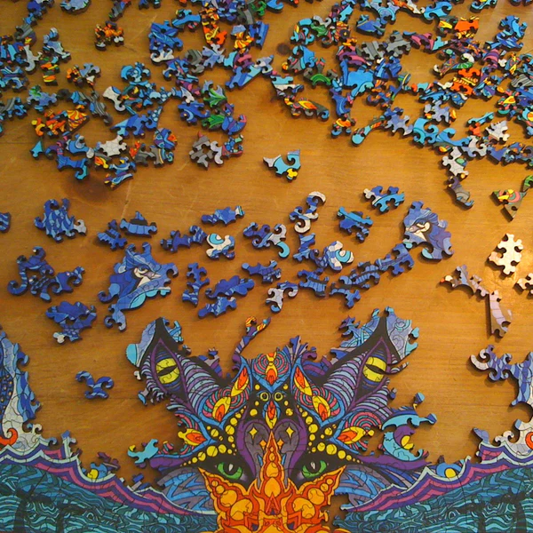

<div class="textcontainer">
<br></br>
<h3>Week 1: Final Project Proposal</h3>
<p class = "margin"></p>
Here are at most 3 ideas for my final project
<p class = "margin"></p>
<h4>Idea 1 : music speed device (something to put in/on a shoe or speaker or watch)</h4>
<p class = "margin"></p>
A device that increases music speed as you slow while running to help you run faster and not slow down. Or perhaps an app.
<p class = "margin"></p>
<h4>Idea 2: jewelry maker </h4>
<p class = "margin"></p>
I love making jewelry so I think it would be great to make a device to bend and cut wire in any way I like.
You could insert a design somehow and it makes an accurate recreation without the human error in its symmetry.
<p class = "margin"></p>
<h4>Idea 3: 3-D puzzle</h4>
<p class = "margin"></p>
My neighbors at the end of summer introduced me to Liberty puzzles which are wooden puzzles that are cut into crazy shapes and patterns.
I think it would be cool to make it even harder by making the puzzle 3-D instead of just a 2-D puzzle.
I think I would make a globe or planet so that it could spin or move in some way as well.

</div>